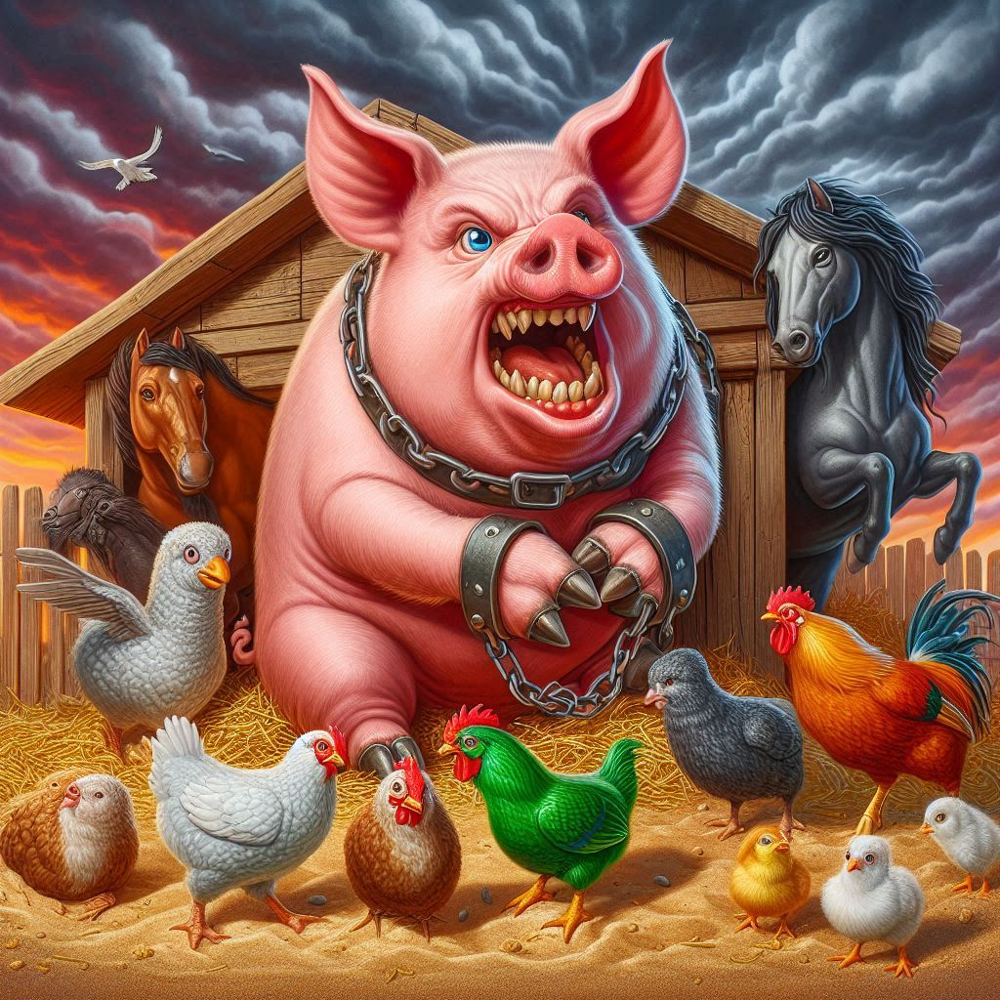

동물농장
목차
작가
조지오웰
출판일
1945년
감상평에 대한 AI그림
동물들이 인간의 억압에서 벗어나기 위해 혁명을 일으킨다는 점이 신기하게 다가왔다.
하지만 돼지들이 독재자로 군림하면서 다른 동물들이 차별과 억압을 당한다는 점에서 이 책이 권력의 집중과 부패를 잘 풍자하였다고 생각한다.
뿐만 아니라 쉽게 선동당하는 농장의 동물들의 모습을 통해 현대사회의 미디어와 정치적 선동이 갖는 힘을 떠올릴수 있었다

감상평에 대한 AI평가
주제 인식: 작품이 다루고 있는 권력의 집중과 부패에 대한 분석이 매우 잘 드러나 있습니다. 돼지들이 독재자로 군림하는 모습을 통해 권력의 본질을 비판적으로 바라본 점이 인상적입니다.
사회적 비유: 동물들이 쉽게 선동당하는 모습을 현대 사회의 미디어와 정치적 선동에 연결한 것은 통찰력이 돋보입니다. 이는 평소 정치와 권력 구조를 주의 깊게 관찰하고 있다는 것을 보여줍니다.
풍자의 이해: 조지 오웰이 "동물농장"을 통해 의도한 풍자적 요소를 잘 파악하셨습니다. 단순히 권력의 변화를 넘어서, 그 과정에서 나타나는 부조리와 불평등을 인식하고 있다는 점이 좋습니다.
개인적인 연결: 감상문에서 개인적인 느낌과 연결 지은 점이 좋습니다. 작품이 미치는 실질적인 영향에 대해 생각해보는 것은 독서의 깊이를 한층 높입니다